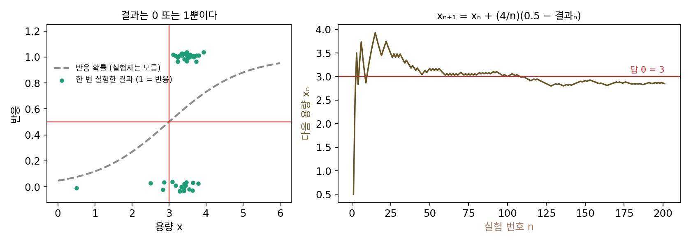
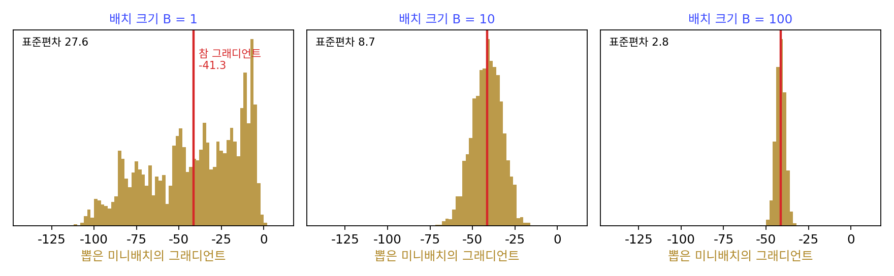
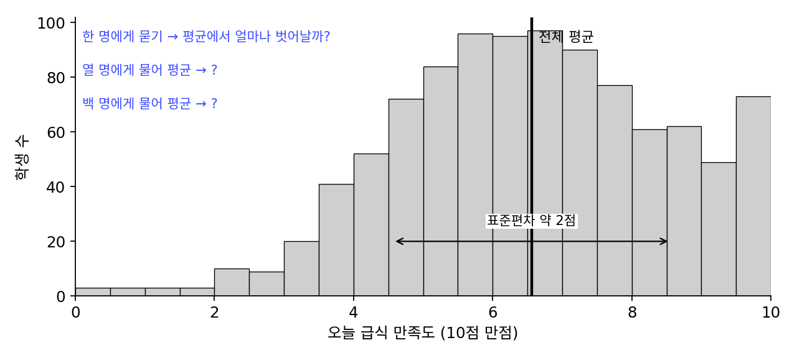
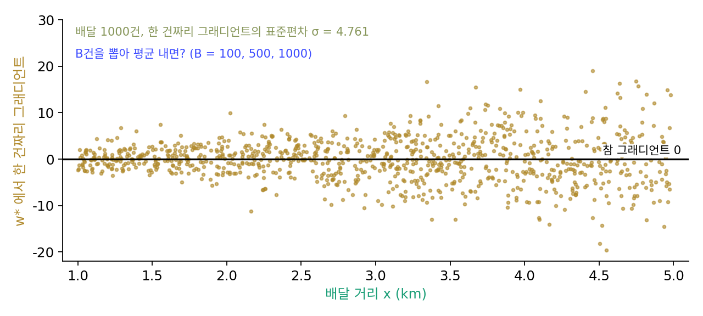
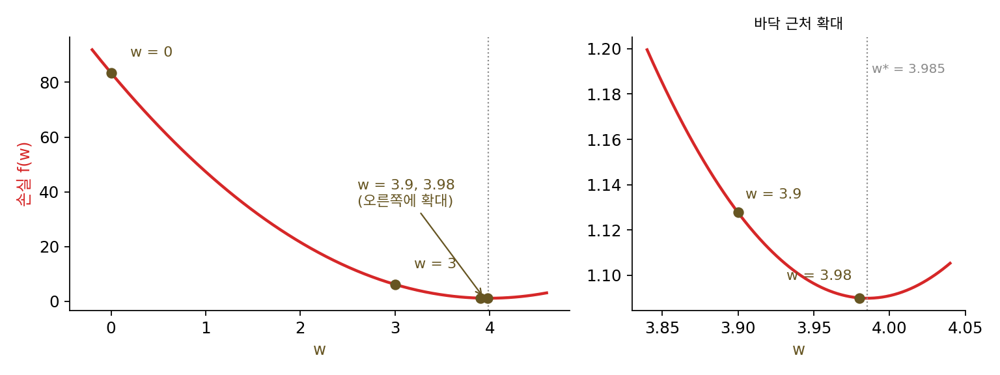

확률적 경사하강: 노이즈 섞인 그래디언트로 걷기
이 장의 물음
경사하강은 지금 자리에서 손실의 그래디언트를 재고, 학습률을 곱한 만큼 반대쪽으로 옮기기를 되풀이하는 방법이다. 학습률을 곡률의 상한 L에 맞춰 2/L보다 작게 잡으면 손실은 스텝마다 줄고, 손실의 바닥에 가까워질수록 그래디언트가 작아져서 스텝도 저절로 짧아진다. 그런데 이 약속에는 그래디언트를 정확히 안다는 조건이 하나 붙어 있었다.
이미지 백만 장으로 신경망을 학습시킨다고 하자. 정확한 그래디언트를 얻으려면 한 스텝마다 백만 장을 모두 모델에 넣고 역전파를 해야 한다. 그래서 실제 학습 코드는 데이터에서 몇십, 몇백 장만 뽑아 그래디언트를 추정하고 곧바로 한 스텝을 옮긴다. 그렇게 학습시킨 손실 곡선을 그려 보면 매끈하게 내려가지 않고 톱니처럼 오르내리며 내려간다. 한참 학습한 뒤에도 손실은 한 값에 멈추지 않고 그 언저리를 맴도는데, 학습률을 중간에 열 분의 일로 줄이면 손실이 계단처럼 한 번 더 뚝 떨어진다. 그리고 학습 코드에는 처음 몇백, 몇천 스텝 동안 학습률을 0에서부터 천천히 올리는 설정이 거의 늘 들어 있다.
이 장은 다음 물음에 차례로 답한다.
- 데이터 몇 건만 보고 추정한 그래디언트로 걸어도 손실의 바닥에 닿을까? 몇 건으로 추정한 그래디언트는 얼마나 틀리고, 한 번에 뽑는 데이터 수와 어떤 관계일까?
- 학습률을 고정하면 손실은 왜 한 값에 멈추지 않을까? 맴도는 높이는 무엇이 정할까?
- 손실의 바닥에 닿으려면 학습률을 얼마나 빨리 줄여야 할까? 너무 빨리 줄이면 어떻게 될까?
- 학습할 스텝 수가 정해져 있을 때 학습률은 어떤 모양으로 줄이는 것이 좋을까?
- 처음 몇 스텝의 학습률을 낮추는 것은 무엇을 막으려는 것일까?
확률적 경사하강: 몇 건만 보고 그래디언트를 추정한다
학습 데이터가 백만 건이면 손실은 백만 건 각각의 손실을 평균 낸 것이고, 그 그래디언트도 백만 건 각각의 그래디언트를 평균 낸 것이다. 한 스텝에 데이터 백만 건의 계산이 들지만, 평균은 전부를 세지 않아도 추정할 수 있다. 선거 여론조사는 유권자 수천만 명 가운데 천 명쯤에게 묻고, 급식 맛을 알고 싶은 영양사는 학생 몇 명에게만 물어본다. 그래디언트도 몇 건만 뽑아 평균 내면 되지 않을까? 다만 그렇게 추정한 그래디언트는 뽑을 때마다 다르고, 참 그래디언트와도 조금씩 어긋난다. 틀린 방향으로 걷는 스텝이 섞여도 바닥에 닿을 수 있을까?
역사: 로빈스와 먼로, 반응만 보고 용량 찾기

추정한 값으로도 답에 다가갈 수 있음을 처음 정리로 보인 것은 미국 노스캐롤라이나 대학교의 통계학자 허버트 로빈스(Herbert Robbins)와 서턴 먼로(Sutton Monro)였다. 두 사람은 1951년 『수리통계 연보(Annals of Mathematical Statistics)』에 여덟 쪽짜리 논문 「확률적 근사 방법(A Stochastic Approximation Method)」을 실었다. 미국 해군 연구청(Office of Naval Research)의 지원을 일부 받았다고 적혀 있다.
그들이 푼 문제는 이렇다. 실험의 조건 x(약의 용량 같은 것)를 정하면 결과 Y가 나오는데, 결과는 같은 x에서도 실험할 때마다 다르다. 실험자는 결과의 평균 M(x)가 어떤 함수인지 모르고, 오른쪽으로 갈수록 커진다는 것만 안다. 이때 평균 결과가 정해진 값 α가 되는 조건 x, 곧 M(x) = α의 해를 찾고 싶다. 논문 4절의 예를 보면 실감이 나는데, 생물 검정(bioassay)이나 감도 시험(sensitivity test) 자료에서는 실험 대상이 반응했는지(1) 안 했는지(0)만 알 수 있다. 반응 확률이 50%가 되는 용량을 찾으려면 어떻게 할까?
로빈스와 먼로의 규칙은 놀랄 만큼 단순하다. 이번 용량 xₙ에서 결과 yₙ을 보고, 다음 용량을 xₙ₊₁ = xₙ + aₙ(α − yₙ)로 정한다. 반응했으면(yₙ = 1) 용량을 조금 줄이고, 안 했으면 조금 늘린다. 한 번의 결과는 0 아니면 1이라 M(x)에 대해 거의 아무것도 말해 주지 않는데도, 옮기는 폭 aₙ을 1/n처럼 줄여 가면 xₙ은 확률적으로 답에 모인다는 것이 그들의 정리였다. 함수를 모르고 노이즈 섞인 결과 하나씩만 보면서도, 결과 하나하나가 평균적으로 옳은 쪽을 가리키기만 하면 된다는 것이다. 그래디언트를 몇 건만 보고 추정하는 지금의 학습이 바로 이 구조다.

반응하면 줄이고 안 하면 늘리는 규칙이면 저도 떠올릴 수 있겠는데요. 그림처럼 200번 해 보면 3 근처로 가는 게 보이잖아요.

그림의 200번은 이 책이 반응 확률 곡선을 정해 두고 계산으로 흉내 낸 거예요. 생물 검정에서는 실험 한 번에 실험 대상 하나가 들어요. 몇 번까지 해 보면 「답에 모였다」고 말할 수 있을까요?

음, 200번째에 2.85였다고 300번째에도 3 근처에 있다는 보장은 없겠네요. 결과가 0 아니면 1이라서, 운 나쁜 결과가 몇 번 이어지면 멀리 밀려날 수도 있고요.

그래서 두 사람은 몇 번 해 보는 대신 정리로 보였어요. 평균 결과 M(x)가 어떤 곡선인지 모르는 채로, 몇 가지 조건만 걸고 xₙ이 확률적으로 답에 모인다는 것을요. 곡선의 모양을 하나도 쓰지 않고 증명해야 했어요.

저라면 코드로 돌려 보고 숫자가 3 근처에 머물면 됐다고 했을 거예요. 그런데 결과 하나에 실험 대상 하나가 들면 그렇게 많이 돌려 볼 수도 없고, 많이 돌려 봐도 그 곡선 하나에서만 확인한 거네요.

결과 하나하나는 거의 아무것도 말해 주지 않아도 평균적으로 옳은 쪽만 가리키면 된다는 거잖아요. 그럼 데이터 몇 건으로 추정한 그래디언트도 평균적으로는 참 그래디언트를 가리킬까요? 몇 건을 뽑으면 얼마나 틀릴까요?
배달 1000건에서 그래디언트 추정하기
로빈스와 먼로의 생각이 신경망 학습에서 어떻게 보이는지, 답을 아는 작은 회귀 문제에서 직접 재 보자. 어느 음식점의 배달 기록 1000건이 있다. 건마다 배달 거리 x(km, 1~5 사이)와 걸린 시간 y(분)가 적혀 있다(이 책에서 걸린 시간 = 4 × 거리 + 표준편차 1.5분의 노이즈로 만든 기록이다. 씨앗 고정). 1km에 몇 분이 걸리는지를 파라미터 w 하나로 두고, 걸린 시간을 w·x로 예측한다. 손실 f(w)는 1000건의 예측 오차를 제곱해 평균 낸 것의 절반이다. 손실이 가장 작은 곳(바닥)은 w* = 3.985분/km이고, 그때 손실은 1.090이다.
w = 0에서 1000건을 모두 써서 잰 참 그래디언트는 −41.32다. 이번에는 1000건 가운데 한 건만 아무렇게나 뽑아 그 한 건의 그래디언트를 재 보자. 여덟 번 뽑으니 −34.3, −51.7, −47.7, −26.3, −15.8, −14.5, −65.9, −34.3이 나왔다. 모두 음수라 「w를 키우라」는 방향은 맞지만 크기는 −14.5에서 −65.9까지 제멋대로다. 열 건씩 뽑아 평균 내면 −40.3, −46.7, −34.2, −46.9, −48.4, −58.4, −55.0, −46.7로 참 그래디언트 둘레에 훨씬 가깝게 모인다. 한 번에 뽑는 건수를 바꿔 가며 2만 번씩 뽑은 결과는 다음과 같다.
| 한 번에 뽑는 건수 B | 뽑은 그래디언트의 평균 | 뽑은 그래디언트의 표준편차 | 한 건의 표준편차 ÷ √B |
|---|---|---|---|
| 1 | −41.62 | 27.72 | 27.64 |
| 10 | −41.36 | 8.71 | 8.74 |
| 100 | −41.35 | 2.77 | 2.76 |
| 1000 | −41.33 | 0.87 | 0.87 |
표에서 두 가지가 보이는데, 첫째로 몇 건을 뽑든 평균은 참 그래디언트 −41.32에 붙어 있다. 그리고 표준편차는 뽑는 건수의 제곱근에 반비례해서, 열 배 많이 뽑으면 √10 = 3.16배 작아진다(마지막 줄의 1000은 1000건 가운데 1000번을 되돌려 넣으며 뽑은 것이라 같은 건이 여러 번 뽑히므로 0이 아니다).
이렇게 데이터에서 몇 건을 뽑은 묶음, 곧 미니배치 하나로 그래디언트를 추정하고 그 추정값으로 한 스텝씩 옮기는 방법을 확률적 경사하강 (미니배치로 추정한 그래디언트로 걷기 / stochastic gradient descent, SGD)이라 한다. 미니배치의 크기 B를 배치 크기라 부른다. 추정한 그래디언트 gₖ를 참 그래디언트와 그 둘레의 노이즈 ξₖ(크사이 케이)로 나누어 적으면 다음과 같다.
미니배치 노이즈 ξ의 평균이 0이라는 것이 로빈스와 먼로가 요구한 「결과가 평균적으로 옳은 쪽을 가리킨다」에 해당한다. 서로 따로 뽑은 B건의 평균이기 때문에 분산이 σ²/B가 된다. 따로 뽑은 값을 더하면 분산이 더해져 B배가 되고, 평균을 내려고 B로 나누면 분산은 B²로 나뉘므로 남는 것은 σ²/B다.

노이즈의 크기를 그래디언트의 크기와 비교하면 하나가 더 보인다. w = 0에서 한 건짜리 그래디언트의 표준편차는 27.64이고 참 그래디언트의 크기는 41.32이므로, 노이즈는 신호의 0.67배다. B = 10이면 0.21배, 100이면 0.07배로 준다. 그런데 바닥 w*에서는 참 그래디언트가 0인데 한 건짜리 그래디언트의 표준편차는 4.76으로 남아 있다. 바닥에 가까워질수록 신호는 사라지고 노이즈만 남는다는 이 사실이 이 장의 나머지를 끌고 간다.
ML에서: 한 스텝을 싸게, 스텝을 많이
파이토치에서 DataLoader(dataset, batch_size=64, shuffle=True)로 데이터를 읽어 loss.backward()와 optimizer.step()을 부르면, 그것이 배치 크기 64의 확률적 경사하강이다. 옵티마이저 이름이 torch.optim.SGD인 것도 이 때문이다. 다만 실제 코드는 한 스텝마다 따로 뽑지 않고, 데이터를 한 번 섞은 뒤 앞에서부터 64건씩 잘라 쓰다가 데이터를 다 훑으면 다시 섞는다. 데이터 전체를 한 번 훑는 단위를 에포크(epoch)라 한다.
레옹 보투(Léon Bottou)는 2010년 계산 통계 학회(COMPSTAT)에 낸 글 「확률적 경사하강으로 하는 대규모 기계학습(Large-Scale Machine Learning with Stochastic Gradient Descent)」에서 이 방법이 왜 큰 데이터에서 이기는지를 정리했다. 그의 출발점은 데이터의 크기가 프로세서의 계산 속도보다 빨리 늘어서, 이제는 학습을 묶는 것이 데이터의 양이 아니라 계산 시간이라는 것이었다. 정해진 시간 안에서는 한 스텝을 정확히 하는 것보다 값싼 스텝을 많이 하는 쪽이 낫고, 그래서 겉보기에는 거친 확률적 경사하강이 큰 문제에서 좋은 성능을 낸다는 것이다. 그는 스텝들을 평균 낸 확률적 경사하강이 학습 데이터를 한 번만 훑고도 통계적으로 가장 효율적인 수준에 닿는다는 결과도 함께 소개했다.
문제 1. 급식 만족도 조사
학생 1000명이 다니는 학교의 영양사가 오늘 급식의 만족도(10점 만점)를 알고 싶다. 학생들의 점수는 표준편차가 2점쯤 흩어져 있다. (가) 한 명에게만 물으면 그 답은 전체 평균에서 얼마나 벗어나기 쉬운가? 열 명, 백 명에게 물어 평균 내면? (나) 열 명에게 물을 때보다 두 배 정확하게(표준편차를 절반으로) 알려면 몇 명에게 물어야 하는가? (다) 매일 한 명에게만 묻는 영양사와 매일 백 명에게 묻는 영양사 가운데 누가 메뉴를 더 잘 고치겠는가?

(가)부터 할게요. 한 명에게 물으면 그 답은 평균에서 2점쯤 벗어나요. 열 명의 평균이면 분산이 2²/10이니까 표준편차는 2/√10 = 0.63점, 백 명이면 0.2점이에요.
학생 1000명을 만들어 놓고 흉내 내 봐도 0.63, 0.20이 나와. 그럼 (나)는 0.63의 반인 0.32점이 되게… 2/√n = 0.32에서 √n = 6.3이니까 n = 40, 마흔 명이네.
두 배 정확해지는 데 사람은 네 배가 들었어요. (다)는요? 백 명이 더 정확하니 당연히 백 명일까요?

정확도만 보면 백 명이죠. 그런데 백 명에게 물으려면 하루가 다 가겠는데요.
매일 한 명에게만 물으면 하루에 드는 품이 백분의 일이야. 같은 품으로 백 일 동안 메뉴를 고쳐 볼 수 있고.
한 번 한 번이 2점씩 틀리는데도 괜찮을까요?

국 끓일 때도 냄비를 다 마셔 보고 간을 맞추지는 않잖아요. 한 숟갈 떠서 맛보고 소금 조금, 또 한 숟갈 맛보고. 한 숟갈이 냄비 전체 맛이랑 좀 달라도, 몇 번 고치다 보면 맞아 가요.

음… 한 숟갈이 틀리는 방향이 평균적으로는 맞는 맛 둘레에 고르게 흩어져 있다면, 여러 번 고치는 동안 서로 지워진다는 거네요. 표본 평균의 분산이 1/n로 준다는 걸 통계 수업에서 배울 때는 정확도 얘기로만 들었는데, 품과 정확도를 맞바꾸는 비율이기도 하네요.
문제 2. 1000건을 모두 뽑았는데 노이즈가 남는다
배달 1000건 회귀의 바닥 w*에서 참 그래디언트는 0이고, 한 건짜리 그래디언트의 표준편차는 σ = 4.761이다. (가) 배치 크기 B = 1000으로 뽑으면 추정한 그래디언트의 표준편차는 σ/√B로 얼마인가? (나) 그런데 1000건을 모두 쓰면 참 그래디언트 그 자체라 노이즈가 없어야 한다. 무엇이 어긋났는가? (다) 겹치지 않게 뽑을 때의 표준편차가 σ/√B × √((1000 − B)/(1000 − 1))임을 받아들이고, B = 100, 500, 1000에서 두 방식을 비교하라.

(가)는 4.761/√1000 = 0.1506이에요. 코드로 2만 번 뽑아 봐도 0.1506이 나와요. 그러니까 1000건을 써도 노이즈가 조금은 남는 거죠.
그 코드는 1000건을 어떻게 뽑았죠?
0부터 999 사이의 번호를 1000번 아무렇게나 골랐어요. 아, 그러면 같은 배달이 두 번, 세 번 뽑히고 한 번도 안 뽑히는 배달도 생기네요.
되돌려 넣고 뽑으면 뽑을 때마다 1000건 전체에서 새로 고르니까 서로 따로 뽑은 값이 맞고, 분산이 σ²/B야. 그럼 겹치지 않게 뽑으면?
한 건을 뽑을 때마다 남은 건은 어떻게 되죠?

줄어요. 그러면 서로 따로가 아니게 되네요. 그 보정이 √((1000 − B)/999)이고, B = 1000이면 0이 되니까 노이즈가 정확히 사라져요.
실제로 1000건을 섞어서 모두 쓰니까 평균 그래디언트가 −4.4 × 10⁻¹⁴, 계산 오차만 남았어.

그래요. B = 100과 500에서는 어떻죠?
B = 100이면 되돌려 넣을 때 0.4761, 겹치지 않게 0.4519로 거의 같아요. 보정 인자가 0.949라서요.
B = 500이면 0.2129와 0.1506이야.

0.1506? 어, 겹치지 않게 500건 뽑은 노이즈가 되돌려 넣으며 1000건 뽑은 노이즈와 같네요. 모집단이 유한할 때 샘플조사에서 쓰는 유한 모집단 보정이 이거였네요.
실제 학습은 에포크마다 섞어서 겹치지 않게 자르니까, 데이터가 백만 건이고 배치가 수백 건이면 보정 인자가 거의 1이라 σ²/B로 생각하면 되겠어요.
문제 3. 배치를 키워도 소용없는 지점
샘 매캔들리시(Sam McCandlish)와 동료들은 2018년 논문 「대규모 배치 학습의 경험적 모델(An Empirical Model of Large-Batch Training)」에서 「그래디언트 노이즈 크기」를 재면 배치를 어디까지 키우는 것이 이득인지를 추정할 수 있다고 보고했다. 파라미터가 하나이면 그래디언트 노이즈 크기는 B_simple = σ²/(참 그래디언트)²이다. 배달 1000건 회귀에서 w = 0, 3, 3.9, 3.98일 때 그래디언트 노이즈 크기를 구하고, 학습이 진행될수록 쓸 만한 배치 크기가 어떻게 바뀌는지 말하라. (w = 0에서 참 그래디언트 −41.32, σ² = 763.7, w = 3에서 −10.22, 69.64, w = 3.9에서 −0.886, 23.20, w = 3.98에서 −0.0563, 22.68이다.)

네 자리에서 다 구해 볼게요. w = 0에서 763.7/41.32² = 0.447, w = 3에서 69.64/10.22² = 0.667, w = 3.9에서 23.20/0.886² = 29.6, w = 3.98에서 22.68/0.0563² = 7157이에요.

바닥에 다가가니까 갑자기 커지네. 0.4에서 7000으로.
분자와 분모 가운데 어느 쪽이 그렇게 만들었죠?
분자 σ²는 바닥 근처에서 22쯤으로 거의 그대로예요. 분모의 참 그래디언트가 0으로 가니까요.
이 비를 배치 크기와 견주어 읽으려면요? 배치 B의 노이즈 분산은 얼마였죠?
σ²/B요. 그게 신호의 제곱보다 작아지려면… B가 B_simple보다 커야 해요. 멀리 있을 때는 한 건만 봐도 방향이 맞고, 바닥 근처에서는 수천 건을 봐야 방향을 겨우 알아요.
그래서 논문은 그래디언트 노이즈 크기가 손실이 줄어들수록 커진다고 보고했어요. 학습 초반에는 배치를 키워 봐야 같은 스텝을 비싸게 하는 셈이고, 후반에는 배치를 키우면 스텝 하나하나가 실제로 나아져요.
큰 언어 모델 학습 설정에 배치 크기를 학습 초반에 점점 키운다는 줄이 있던 게 생각나요. 그게 이 얘기였구나.